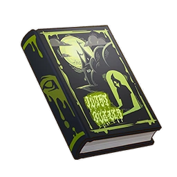

Fontaine · Books & Literature
The Fall of the Faded Castle
This anonymous three-poem Fontaine collection follows a black dream-ship, a sleepless castle master, and the dark-robed figure who brings the castle to ruin.

An Anonymous Three-Poem Cycle
The Fall of the Faded Castle is a three-volume Fontaine collection. Each poem is attributed to an unknown author and described in the book’s catalog as strange and ominous. Across the poems, a black ship and a tall, dark-robed figure recur; the text leaves the figure’s identity open.
The poems have a shared atmosphere and imagery, but the book does not identify a witness, name the figure, or state that its scenes are a literal record of Fontaine’s past.
Volume I: The Ship in the Dream
The first poem describes a wrecked black ship moving through darkness and fog, with a tall figure on its deck. The speaker wonders whether the figure is a sea-born monster, a lord from an ancient world, or a nightmare. Those alternatives are questions in the poem, not answers supplied by the book.
Volume II: The Castle and Its Debt
The second poem turns to a glittering castle beside a lake. Its master cannot find peace: at midnight, he fears that the dark-robed figure will collect a debt and reduce the guests’ souls, as well as his own, to dust.
The poem does not explain the debt or identify who owes it. The figure remains a threat in the poem’s imagined story rather than an established character in the game’s wider history.
Volume III: The Castle Falls
In the last poem, a rasping laugh and red fog precede the figure’s arrival. The guests and master lose their souls, the castle collapses and is swallowed by waves, and the blood moon once blocked by its towers returns to view. The book closes on a ruined castle remembered as darkness and loss.
Fontaine’s real Faded Castle belonged to Boethius before Remuria fell, according to the region’s official HoYoWiki record. That parallel makes comparison natural, but the poems never name Boethius or state that their story is the castle’s historical account. The author and the figure remain unidentified.
This is an original CoreGG reading guide, not an official HoYoverse article or a reproduction of the game text. Source links below identify the records used so you can check the original context.
Sources & references
Check these sources for the original game text and reference trail.